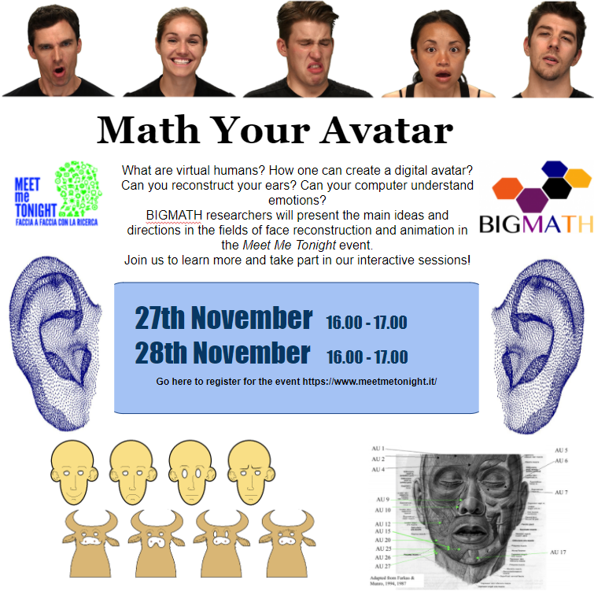

Highlights of my PhD
Over the course of my PhD I had the opportunity to take part in different events. These include competitions I enrolled in with colleagues, venues where I had the opportunity to present my research (both to fellow colleagues and general audiences) and extra-curricular courses, workshops or summer schools. Below you can find the most important ones, with links to related pages.
Conferences and dissemination events
21st ECMI Conference on Industrial and Applied Mathematics
I gave a presentation as part of the Parallel Mini Symposia MS05a: Mathematics for Big Data, on April 13th with the title: From Noisy Point Clouds to Complete Ear Models: Unsupervised Pipeline for Application in the Prosthetic Industry
PhD2ays 2020
I gave a talk on December 9th with the title: “Learning from 3D data: how mathematics can create a realistic human face”. I also produced the website for the conference.
 MeetMeTonight
MeetMeTonight
Faccia a faccia con la ricerca
Dissemination event with the University of Milan aim at the general public. With my colleagues Stevo Racković (University of Lisbon) and , I produce a website to explain to a general audience the content of our research and its importance.
Virtual Seminars on Complexity
I gave a talk on October 20th with the title: “From noisy point clouds to complete ear models: an unsupervised pipeline for application in the prosthetic industry”. Each session has two speakers who present their talk for 45 minutes followed by 15 minutes of discussion.
MeetMeTonight
Faccia a faccia con la ricerca
Dissemination event with the University of Milan aim at the general public.
 July 2019, Valencia
July 2019, Valencia
ICIAM 2019
MinisymposiumAs part of a Minisymposium organized by BIGMATH, I went to the ICIAM conference to present the initial segmented of my research, with title ”Big data processing for multivariate, noisy, and time-correlated data: human face reconstruction” - jointly with Stevo Racković (University of Lisbon) and Rongjiao Ji (University of Milan).
Competitions
 ECMI 2021 Students Competition
ECMI 2021 Students Competition
First place!
With Stevo Racković (University of Lisbon) and Greta Malaspina (University of Novi Sad), we won the first place in the ECMI 2021 competition. The goal was to produce a mathematical model that would fit the data of COVID-19 in Great Britain and Israel.
We will present our solution at the Educational Committee of ECMI next spring, and now we are invited to make a full paper for publication - with more detailed experiments and final conclusions.
AAAS Student E-poster Competition
Third Place!

With two colleagues from the BIGMATH program we won third place in the e-Poster competition for the graduate students, with the title 'Meet my Avatar' that merges the ideas from the three research fields: inverse rig estimation, face reconstruction, and emotion recognition.
#EUvsVirus pan-European Hackathon
With Stevo Racković (University of Lisbon), Greta Malaspina (University of Novi Sad)
Courses and Workshops
ECMI Postgraduate / VI Iberian / NeEDS MODELLING WEEK
Modelling week
During a week we have worked together with other students, academic advisors and a company, to solve an industrial problem proposed by such company. At the end, a presentation was made to summarize the achieved results, methods and challenges.
ICIAM 2019 - Valencia
As part of a Minisymposium organized by BIGMATH I went to the ICIAM (International Congress on Industrial and Applied Mathematics)